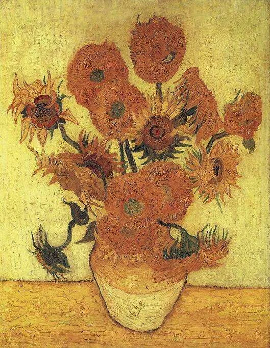

《ひまわり》は、①黄色を一色と思わない、②花を一輪ずつ見て向きと状態を比べる、③近くで絵の具の厚みを見る。この三つで、有名な「黄色い絵」がかなり複雑に見えてきます。
《ひまわり》は画像でもすぐ分かる作品です。だから実物を見ても「本当に黄色い」「ゴッホらしい」で終わりそうになります。でも一度、黄色を“黄色”という一色でまとめないようにすると、花ごと、背景、花瓶、テーブルで色が少しずつ違って見えます。さらに花の向きを追うと、元気に開いている花だけでなく、重く下を向く花もある。実物では、その違いが絵の具の厚さまで含めて迫ってきます。

1. 有名すぎる絵は「思っていたのと違う」を探す
ポスター、教科書、スマホで何度も見た作品は、実物でも知っている画像を確認するだけになりがちです。そこで最初は「予想と違うところ」を一つ探します。色の濃さ、花束の大きさ、表面、額縁との関係など何でも構いません。
《ひまわり》の場合、黄色の強さだけでなく、茶色に近い花、緑が残る茎、背景の落ち着いた黄、花瓶の別の黄など、思った以上に色が分かれて見えるかもしれません。
2. 「何種類の黄色がある？」と数えるつもりで見る
花びらの明るい黄、中心部の茶に近い黄、背景の黄土色、花瓶の黄。厳密に数える必要はありません。「同じ黄色ではない」と気づくことが目的です。
黄色同士を重ねると、輪郭線が強くなくても花と背景を区別しなければなりません。そこで明るさ、筆触、周囲の緑や茶が効いてきます。色名ではなく、隣り合う色の差を見ると、単色に見えた画面が急に細かく分かれます。
3. 花束全体ではなく、一輪だけ選んで向きを追う
次に、花を一輪だけ選びます。正面を向く花、横を向く花、下へ垂れる花。円の形も同じではありません。一輪を見終えたら、その隣へ移ります。
この見方をすると、花束が飾りとして整えられたものというより、それぞれ勝手な方向へ動く集団に見えてきます。画面の上部は外へ広がり、下には重さが集まる。視線が自然に上下へ動きます。
4. 「満開」と「しおれ」を同じ画面で見る
すべてのひまわりが同じ状態ではありません。大きく開く花、花びらが少なくなった花、頭を下げる花があります。花束の美しさだけでなく、咲いた後に変わっていく時間まで画面に入っています。
元気な一輪と、いちばん重そうな一輪を見比べてみます。同じ黄色でも印象が変わります。「生命力の象徴」という知識を先に置くより、自分の目で“時間の違う花が一緒にいる”と確認する方が実感できます。
5. 花瓶は小さいのに、画面を支えている
上に広がる花束に比べると、花瓶はコンパクトです。まず花束全体の横幅を見てから、花瓶へ視線を下ろします。上の不規則な形と、下の安定した塊の差が分かります。
花瓶と背景も似た黄色系なので、境界がはっきりしない場所があります。それでも形が見えるのは、色のわずかな違いと筆の方向があるからです。輪郭線だけで形を作っていないところを探します。
6. 近くでは、花びらより「絵の具」が先に見える
実物で近づける範囲から見ると、絵の具の盛り上がりや筆の跡が目立ちます。花びらを一本ずつ細密に描写するのではなく、絵の具を置いた動きそのものが花の方向になります。
近くでは絵の具、少し離れるとひまわり。その切り替わる距離を探してみてください。画像を拡大するのとは違い、自分の身体を動かして見え方が変わるところが実物鑑賞の面白さです。
7. SOMPO美術館で実物を見るなら、最初と最後に全体を見る
SOMPO美術館所蔵の《ひまわり》は、ゴッホがアルルで制作した花瓶のひまわりの一作です。公式解説では、1888年に描かれた作品として、ロンドンの同主題作品との筆触や色調の違いも紹介されています。
「思ったより○○」を一つ。
向き・咲き方・色を確認。
花が筆の動きへ戻るところを見る。
絵の具がもう一度花束になる。
有名作品は、説明をたくさん知るより「画像では分からなかった一点」を持ち帰る方が、自分で見た記憶になります。
黄色を一色と思わない。花を一輪ずつ見る。